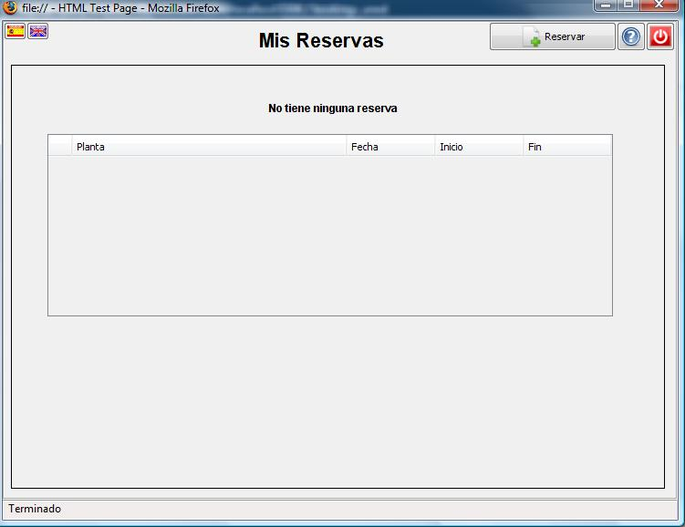
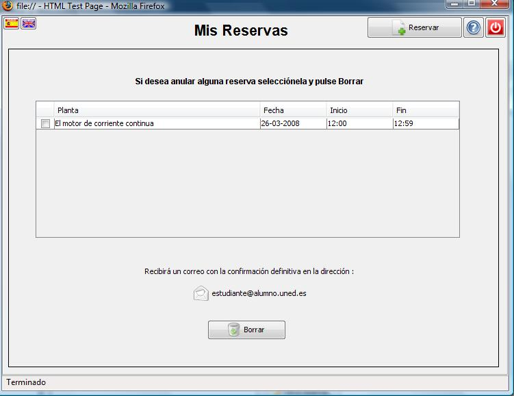
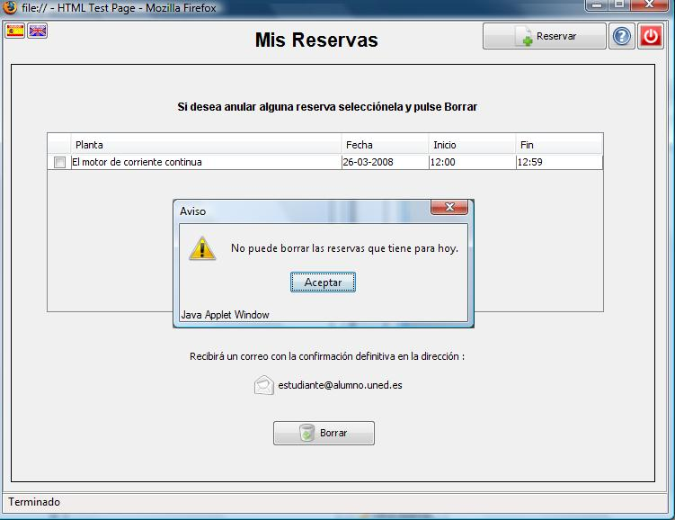

Reservas de Laboratorio
Borrar una reserva
Pulsando en el botón Mis reservas la aplicación le mostrará el listado de las reservas que ha efectuado.
Si no tiene ninguna tendrá el siguiente aspecto:

En caso de que tenga reservas seleccione la que quiere borrar y pulse en el botón Borrar.
Recibirá una confirmación definitiva en su correo electrónico.

La aplicación no permite borrar reservas cuya fecha de inicio coincide con la actual. Recibirá un aviso si esta situación se produce.

Si desea hacer alguna reserva pulse en el botón Reservar.